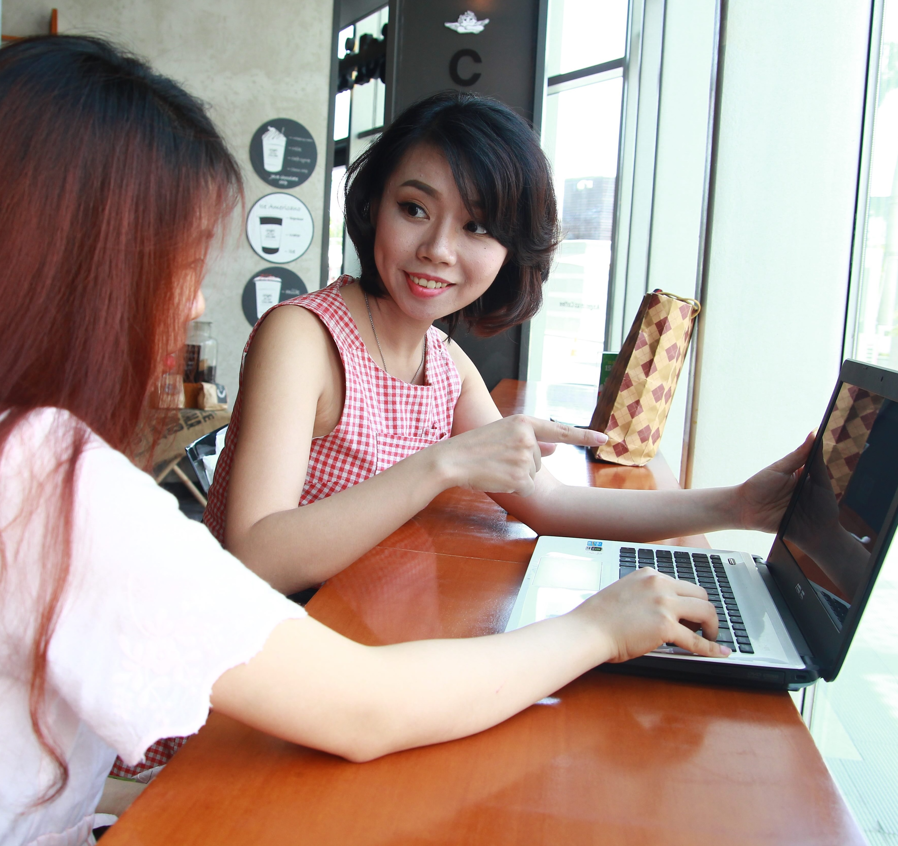
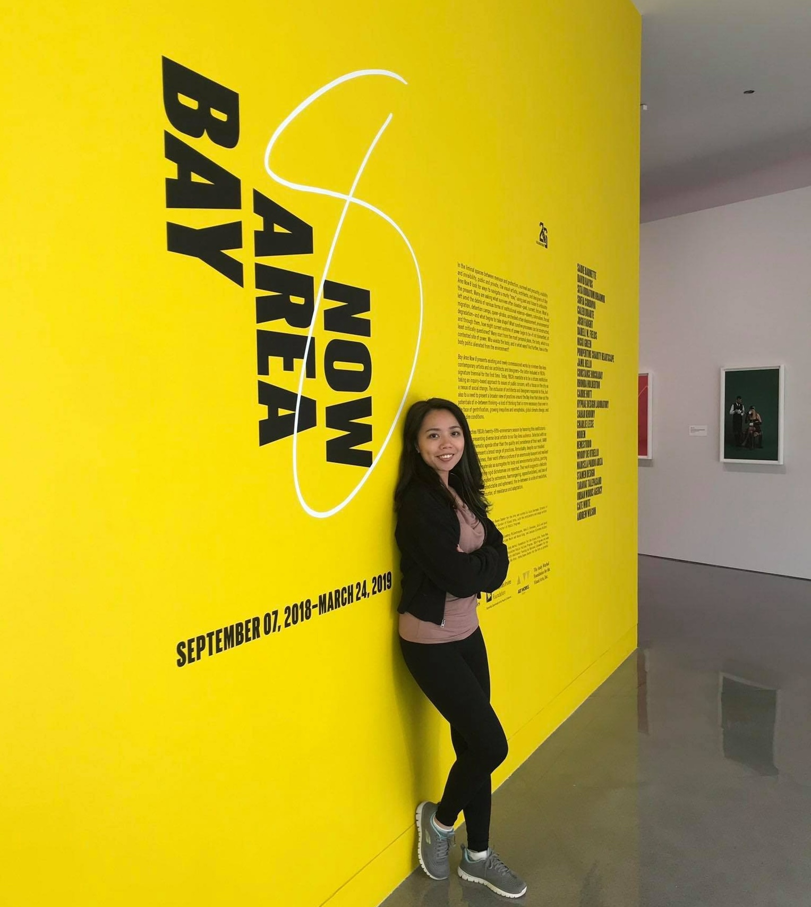
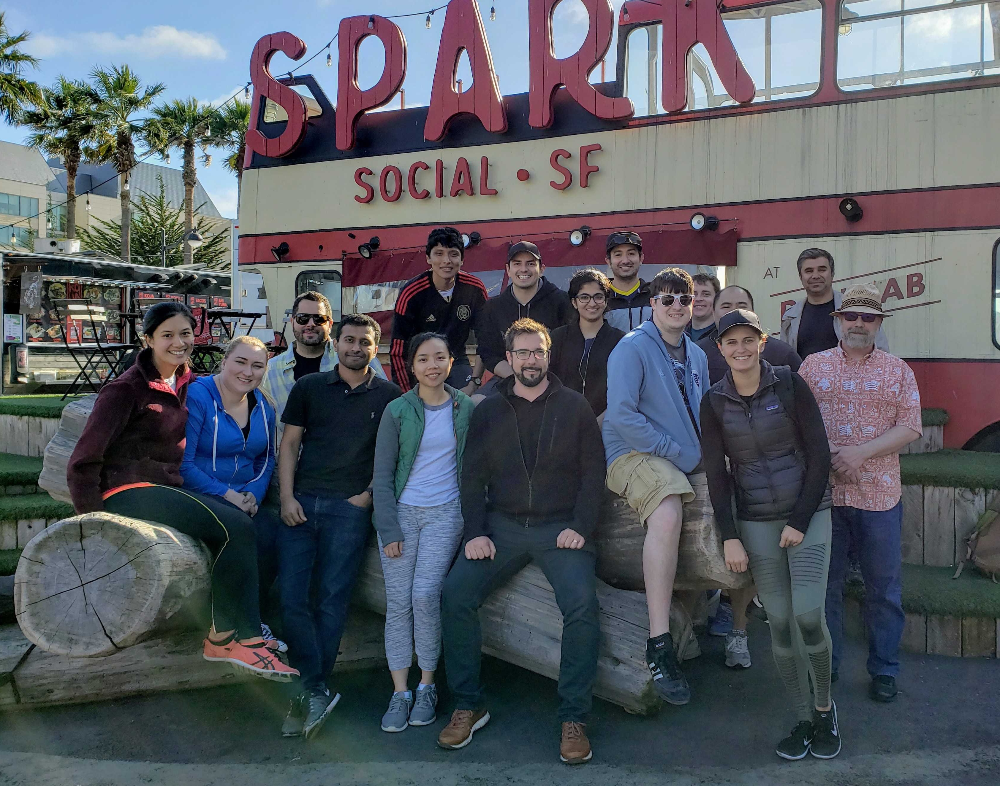
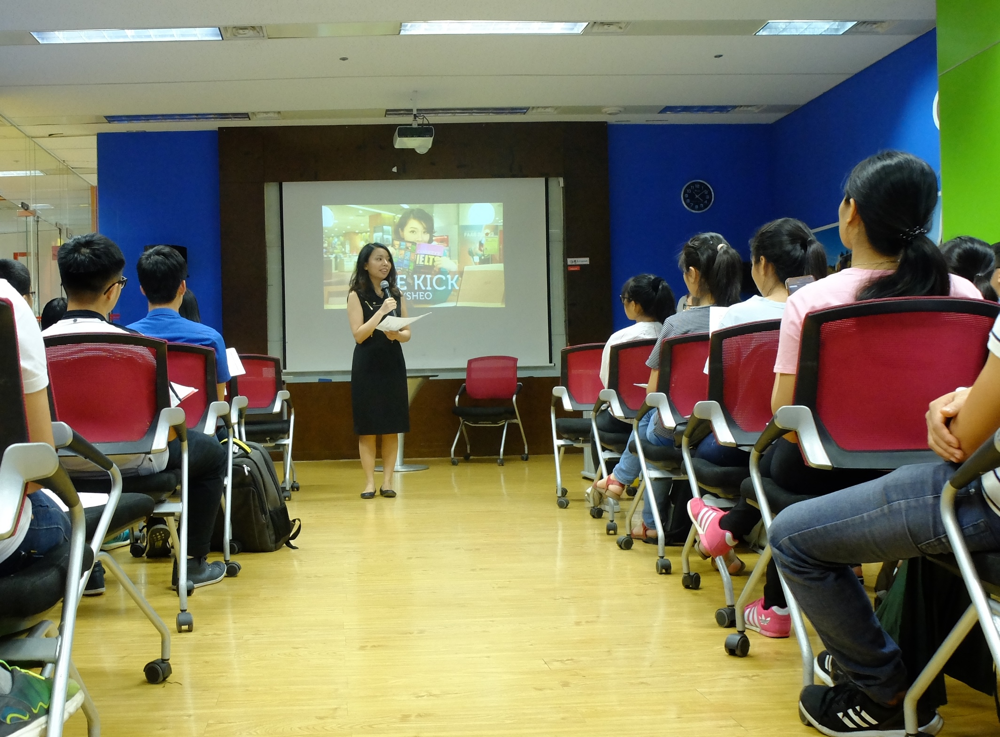

2012 - SÀI GÒN
Một hành trình bắt đầu từ Sài Gòn, nơi đánh dấu bước chân đầu tiên trên con đường tìm kiếm chính mình.

2015 - MỸ
Giấc mơ du học Mỹ thành hiện thực, mở ra những trải nghiệm mới và thử thách không ngờ tới.

2017 - SAN FRANCISCO
Lạc lối giữa thành phố công nghệ, học hỏi và thích nghi với một thế giới mới.

2018 - TECHNOLOGY
Bước chân vào lĩnh vực công nghệ, bắt đầu hành trình phát triển sự nghiệp dev.

2019 - REFLECTION
Nhìn lại hành trình đã qua, học hỏi từ những thất bại và hướng về tương lai.

2024 - NOW
Tạo ra sản phẩm của riêng mình, cống hiến và đồng hành cùng cộng đồng.